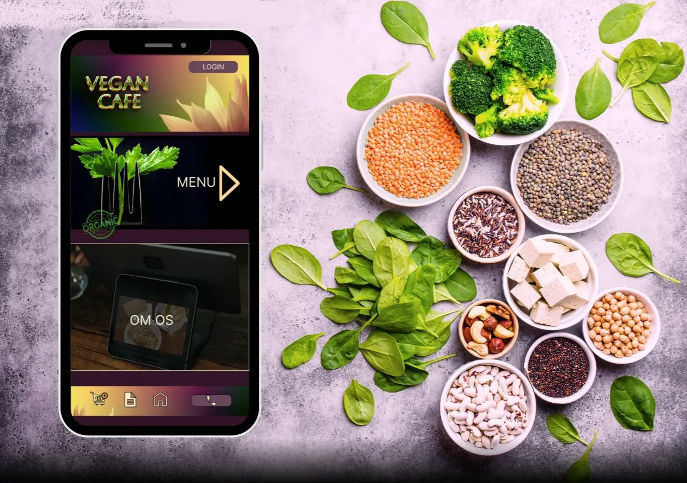
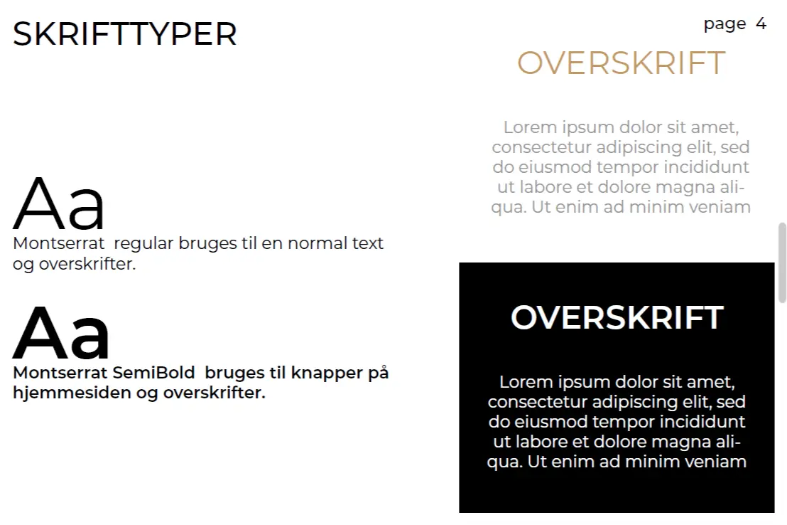
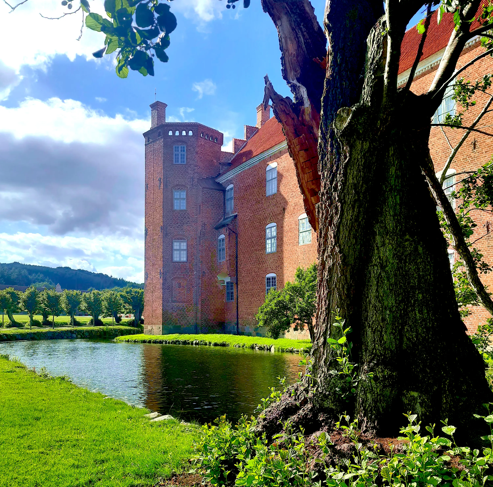

Om mig

Hej, jeg er Iryna
Jeg er multimediedesigner med base i Danmark og kombinerer digitalt design med kunstnerisk tænkning. Mit arbejde fokuserer på at skabe visuelle identiteter, interaktive oplevelser og meningsfulde designs, der forener æstetik og funktionalitet.
Jeg mener, at godt design ikke blot skal kommunikere, men også vække følelser. Den tilgang tager jeg med mig i alt fra research og konceptudvikling til kode og finpudsning.
Kontakt migDet kan jeg

UI/UX Design
Designer brugervenlige interfaces med fokus på klar navigation og en gennemtænkt brugeroplevelse.
Se mereJeg starter altid med at forstå brugerens behov, før jeg tegner en eneste skærm. Jeg arbejder i Figma med wireframes og klikbare prototyper, og tester løsningerne undervejs, så designet er baseret på reel brugeradfærd — ikke kun antagelser.
Webudvikling
Koder hjemmesider fra bunden med HTML, SCSS og JavaScript, med fokus på responsivt design.
Se mereJeg koder fra bunden med HTML, SCSS og JavaScript — ingen page builders eller templates. Jeg strukturerer koden objektorienteret med genanvendelige komponenter, og lægger vægt på at sitet er responsivt og tilgængeligt på alle skærmstørrelser.

Branding
Udvikler visuelle identiteter fra bunden — moodboard, farvepalette og et sammenhængende udtryk.
Se mereEn visuel identitet starter for mig med et moodboard, der sætter retningen. Derefter arbejder jeg igennem flere logo-iterationer, før jeg låser farvepalette og typografi — og sikrer, at identiteten holder sammen på tværs af alt fra visitkort til video.

Typografi
Vælger og kombinerer skrifttyper bevidst, så de understøtter budskab og identitet.
Se mereJeg vælger skrifttyper ud fra, hvad de skal kommunikere — ikke kun hvordan de ser ud. Kombinationen af en display-skrift til overskrifter og en roligere skrift til brødtekst er noget, jeg arbejder bevidst med i hvert projekt.
Illustration
Tegner digitalt på grafisk tablet, fra skitse til færdig illustration.
Se mereJeg tegner digitalt på en grafisk tablet, fra hurtige skitser til den færdige illustration. Til bogomslaget "Bisp. Gunner" arbejdede jeg med at bevare en håndtegnet kvalitet, selvom hele processen foregik digitalt.
Social media design
Designer content til sociale medier, tilpasset den enkelte platforms format.
Se mereJeg designer indhold, der er tilpasset den enkelte platforms format og målgruppe — fra feed-opslag til stories. Fokus er på, at indholdet stadig føles som en del af en samlet visuel identitet.

Foto
Fotograferer og redigerer billeder til brug i branding og digitalt indhold.
Se mereJeg fotograferer og redigerer billeder til brug i branding og digitalt indhold — med fokus på lys, komposition og et udtryk der matcher projektets identitet.

Video
Arbejder med hele processen fra optagelse til klip og farvekorrigering.
Se mereJeg arbejder med hele processen fra optagelse til klip og farvekorrigering i Premiere Pro og After Effects, med fokus på at fortælle en historie gennem levende billeder.